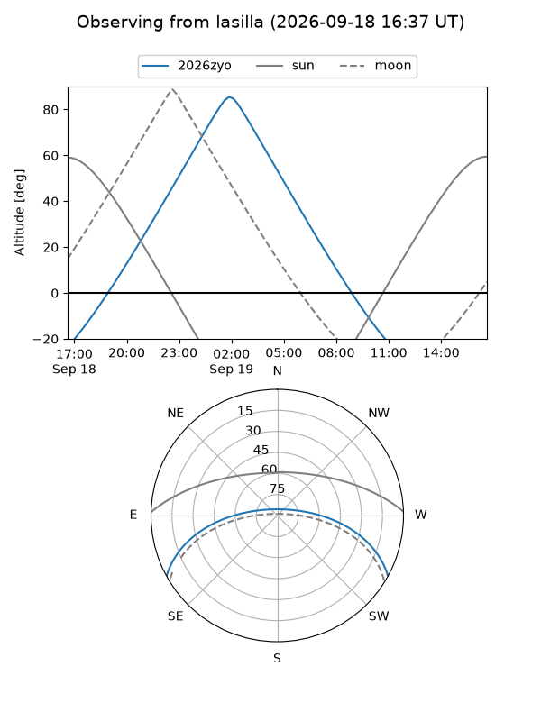
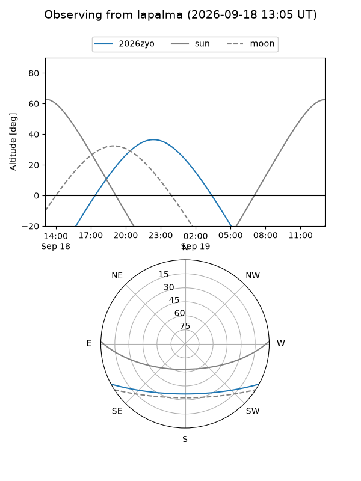
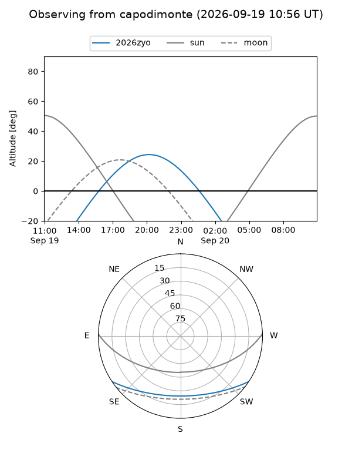
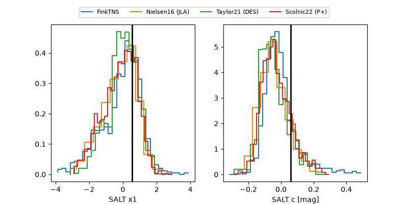

2026zyo
Target 2026zyo at 2026-09-19 10:05
Aliases and brokers:
FINK-ZTF: ztf.fink-portal.org/ZTF26abrcudj
Lasair-ZTF: lasair-ztf.lsst.ac.uk/objects/ZTF26abrcudj
ALeRCE-ZTF: alerce.online/object/ZTF26abrcudj
YSE-PZ: ziggy.ucolick.org/yse/transient_detail/2026zyo
TNS name: wis-tns.org/object/2026zyo
Direct TNS query: direct search
alt names
ZTF26abrcudj (ztf,fink_ztf)
2026zyo (tns,yse)
Coordinates:
equatorial (ra, dec) = 315.3744,-24.87655
equatorial (HMS+DMS) = 21:01:29.87,-24:52:35.59
galactic (l, b) = (21.6922,-38.74211)
Flags:
TNS type: nan
peak dt: +15.0
Photometry:
last atlasc=19.15, atlaso=18.88, ztfg=19.32, ztfr=19.08
5 atlasc, 2 atlaso, 9 ztfg, 8 ztfr detections
Lightcurve
Visibility



Additional plots
